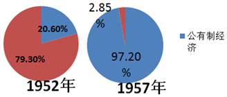
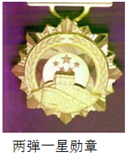

2018年北京市中考历史试题 · 选择题 第16、17、18、19、20题 · 对应解析
16．（3分）中国共产党是抗日战争的中流砥柱以下史实能证明这一结论的有（ ）
①九一八事变后，中国共产党领导东北抗战
②促成国共两党再度合作，团结抗战
③建立敌后抗日根据地，开展游击战争
④中国与反法西斯国家结盟，共同作战
A．①②③B．①②④C．①③④D．②③④
【分析】本题以中国共产党是抗日战争的中流砥柱为切入点，考查中国共产党在抗日战争中的作用及贡献。
【解答】本题考查中国共产党在抗日战争中的作用及贡献。①明显合理：②反映的是中国共产党促成西安事变的和平解决，为全民族的抗战定基础，符合题意：③国共第二次合作后共产党领导的红军改变为八路军和新四军，开始敌后抗战，给了日军以沉重打击，符合题意：④反映的是中国抗日战争与世界反法西斯战争的联系，不直接涉及中国共产党的中流砥柱作用，与题意无关。
故选：A。
【点评】注意识记抗日战争的主要战役及抗战胜利的意义。
17．（3分）人民解放军经历142天的连续作战，从277万人增加到358万人：国民党军队从365万人下降到204万人，主力基本被消灭。取得以上战果的是（ ）
A．转战陕北B．挺进大别山C．三大战役D．渡江战役
【分析】本题以人民解放军经历142天的连续作战，从277万人增加到358万人：玉民党军从365万人下降到204万人，主力基本被消灭为依托，考查解放战争的知识点。注意掌握相关基础知识。
【解答】题干中信息“解放军”、“142天”以及国共两党军队的数量对比发生的明显变化可知，取得以上战果的是应为三大战役。从1948年9月到1949年1月，人民解放军先后进行了与国民党军队主力决战的辽沈、淮海和平津三大战役。三大战役中，人民解放军共歼灭和改编国民党军队一百五十多万人，国民党军队的主力基本上被消灭，共产党军队超过国民党，而对应的国民党军队数量锐减，C符合题意。
故选：C。
【点评】本题考查学生识记和分析历史知识的能力，识记与灵活掌握解放战争的重大事件以及意义。
18．（3分）如图反映了我国公有制、私有制经济成分比重的变化。导致这一变化的是（ ）
公有制经济和私有经济在国民经济中的比重

A．进行土地改革
B．实行三大改造
C．开展人民公社化运动
D．推行家庭联产承包责任制
【分析】本题以图片信息为依托，考查三大改造的知识点。注意掌握相关基础知识。
【解答】从两个图例以及题干可知，题目反映的是在国民经济成分中，公有制经济占比大大超过了私有制经济。结合所学，三大改造的完成使得我国进入了社会主义初级阶段，完成了生产料私有制向社会主义公有制的转变，我国社会主义的基本制度建立。A选项土地改革，改变的是土地制度而非社会性质；C选项人民公社化运动，没有改变公有制的现状，时间也不符合：D选项家庭联产承包责任制，农民获得的是土地的使用权而非所有权。同时根据图示时间，符合要求的只有B选项。
故选：B。
【点评】本题主要考查学生运用所学知识解决问题的能力。识记与灵活掌握三大改造的内容、形式以及意义。
19．（3分）如图是党中央、国务院中央军委颁发的功勋奖章，获得这枚奖章的是（ ）

A．邓稼先B．王进喜C．焦裕禄D．袁隆平
【分析】本题考查邓稼先。探索建设社会主义时期涌现出的模范人物主要有“两弹元勋”邓稼先；“铁人”王进喜；“党的好干部”焦裕禄等，他们身上都具有艰苦创业和全心全意为人民服务的精神。
【解答】图示为两弹一星勋奖章，所给四个选项中获得此奖章的只有邓稼先。王进喜是石油工人，被誉为“铁人”；焦裕禄曾任河南兰考县委书记，被誉为“党的好干部”；袁隆平的贡献是培育了杂交水稻，被誉为“杂交水稻”之父。
故选：A。
【点评】需要准确识记模范人物邓稼先的事迹。
20．（3分）下列史实反映的共同主题是（ ）
（1）1992年11月，大陆海协会和台湾海基会达成体现一个中国原则的“九二共识”
（2）1997年7月1日，中国对香港恢复行使主权
（3）1999年12月20日，中国对澳门恢复行使主权
A．祖国统一B．外交成就C．军队建设D．民族团结
【分析】本题主要考查祖国统一大业的相关史实。十一届三中全会后，改革开放带来综合国力的提高。邓小平从维护祖国和中华民族的根本利益出发，提出“一国两制”的创造性构想。这是完成祖国统一大业的基本方针。
【解答】从材料中可知涉及到的事件有三个，分别是海峡两岸达成的“九二共识”、香港回归、澳门回归，都是关于我国在统一历程中的重大事件，因此反映的共同主题应为祖国统一，其他各项均未涉及。选项A符合题意。
故选：A。
【点评】本题主要考查学生对历史史实的准确识记和理解能力。理解并识记祖国统一大业的相关史实。